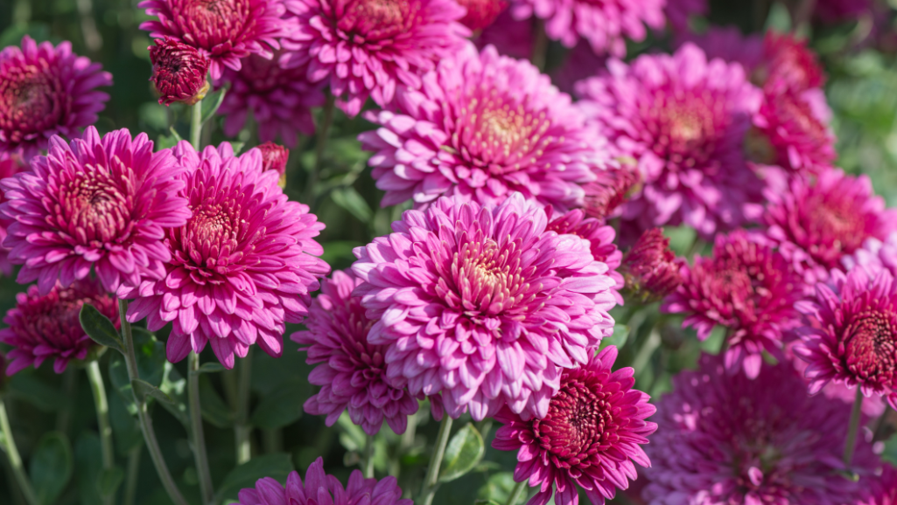
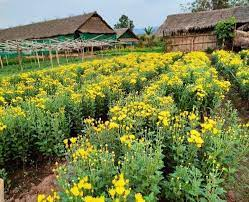

Home
About
Contact
Login
 
ဂန္ဓမာပန်းစိုက်ပျိုးနည်း
နိဒါန်း
အရောင်အသွေး စုံလင်လှသော ဂန္ဓမာပန်းသည် မြင်သူတိုင်းက သဘောကျ နှစ်ခြိုက်သော ပန်းဖြစ်ပါ သည်။ ဂန္ဓမာပန်းသည် ကမ္ဘာတွင် တန်ဖိုးထား အမြတ်တနိုး သုံးစွဲပြီး စီးပွားဖြစ် ထုတ်လုပ် စိုက်ပျိုးသောပန်း ဖြစ်ပါသည်။ မြန်မာနိုင်ငံတွင် ဂန္ဓမာပန်းအား ဘုရားပန်းအဖြစ်လည်းကောင်း၊ အိမ်တွင်း၊ အလှူမင်္ဂလာဆောင်၊ အခမ်းအနားများတွင် အလှပန်းအိုးအဖြစ်လည်းကောင်း နှစ်ခြိုက်စွာ သုံးစွဲကြသော ပန်းဖြစ်ပါသည်။ အရောင်သွေး စုံလင်သော ဂန္ဓမာပန်းများကို စိုက်ပျိုးခြင်းသည်လည်း မြန်မာနိုင်ငံအတွင်း စီးပွားဖြစ် စိုက်ပျိုးရေး လုပ်ငန်းတစ်ခု ဖြစ်ပါသည်။
၁ ။ မျိုး
ဂန္ဓမာပန်းများတွင် မျိုးကွဲပေါင်း များစွာရှိသည်။ ပန်းမျိုးများအား ပန်းပွင့်၏ပုံစံ၊ ပန်းပွင့်၏အရောင်၊ အပင် အရွယ်အစားပေါ် မူတည်၍ အမည်အမျိုးမျိုး ရှိသည်။ ဆန်းမားဖြူ၊ ဆန်းမားဝါ၊ လပ်ကီးဖြူ၊ လက်ကီးနီ၊ ရွှေစိမ်း၊ ကီလို၊ ကြွေဖြူ၊ ကြွေဝါ၊ ချက်စိမ်း၊ ပုလဲဖြူမှအစ မြန်မာနိုင်ငံအတွင်း စိုက်ပျိုးနေသော ဂန္ဓမာပန်းမျိုးများ များစွာရှိသည်။ အဓိကအားဖြင့် မေလနောက်ပိုင်းတွင် စိုက်ပျိုးရမည့်မျိုးနှင့် အောက်တိုဘာလ နောက်ပိုင်းတွင် စိုက်ပျိုးရမည့် မျိုးများ ဖြစ်သည်။အကြမ်းအားဖြင့် ဆန်းမား၊ လပ်ကီး၊ မျိုးများကို မေလနောက်ပိုင်းနှင့် အောက်တိုဘာလနောက်ပိုင်းတွင် စိုက်ပျိုးနိုင်ပါသည်။
၂ ။ ရာသီဥတု
ဂန္ဓမာပန်းသည် နေ့တာတိုအပင် ( Short Day Plant) ဖြစ်ပါသည်။ ဆိုလိုသည်မှာ ပင်ပိုင်းကြီးထွားရန် အတွက် နေ့တာရှည်ရန် လိုအပ်ပြီး ပန်းပွင့်ရန်အတွက် နေ့တာတိုရန် လိုအပ်သည်။ အပင်ကြီးထွားမှုနှင့် ပန်းပွင့်မှုအပေါ် အပူချိန်နှင့် အလင်းရောင်သည် လွှမ်းမိုးသည်။ ပင်ပိုင်းကြီးထွားရန်အတွက် နေရောင်ခြည် အပြည့်အဝနှင့်နေ့တာရှည်ပြီး မြင့်မားသောအပူချိန်(၂၀-၂၈) ဒီဂရီ ဆဲလ်ဆီးယပ် လိုအပ်ပါသည်။ ပန်းပွင့်ရန်အတွက် နေ့တာတိုပြီး နိမ့်ကျသော အပူချိန် (၁၀-၂၈) ဒီဂရီ ဆဲလ်ဆီးယပ် လိုအပ်ပါသည်။ စိုက်ပျိုးဖြစ်ထွန်းမှု အကောင်းဆုံး အခြေအနေမှာ နေ့အပူချိန် (၂၀-၂၈) ဒီဂရီ ဆဲလ်ဆီးယပ် နှင့် ည အပူချိန် (၁၅-၂၀) ဒီဂရီ ဆဲလ်ဆီးယပ်တွင် ဖြစ်ပါသည်။ ဂန္ဓမာ အပင်သည် မနက်ခင်း နေရောင်ခြည် (၅-၆) နာရီကြား နေ့စဉ် ရရှိရန် လိုအပ်ပါသည်။
၃ ။ မြေအမျိုးအစား
ဂန္ဓမာပန်းပင် စိုက်ပျိုးရန်အတွက် မြေချဉ်ငန်ဓာတ် (၆.၅-၇.၅)အတွင်းရှိ သဲနုန်းမြေအမျိုးအစား ရေစီးဆင်းမှု ကောင်းမွန်သော ရေမဝပ်သော မြေဖြစ်ရန် လိုအပ်ပါသည်။
၄ ။ စိုက်ပျိုးနည်း
စိုက်ပျိုးရန်အတွက် မိမိကြိုက်နှစ်သက်ရာ မျိုးများကို မစိုက်ပျိုးခင် မျိုးပျိုးပင်ရောင်းချသူများမှ ကြိုတင်မှာယူ စိုက်ပျိုးကြပါသည်။ ဂန္ဓမာပန်းများကို စိုက်ခင်းများ၊ မှန်လုံအိမ်များ နှင့် အိုးများထဲတွင် စိုက်ပျိုးကြသည်။ မြန်မာနိုင်ငံတွင် စိုက်ခင်းများဖြင့် အများဆုံး စိုက်ပျိုးကြသည်။ မိမိလိုချင်သော ပန်းပွင့်အနေအထားပေါ် မူတည်ပြီး ပင်ကြားအကွာအဝေး ၈ လက်မ မှ (၁၈-၂၄) လက်မ ထား၍ စိုက်ပျိုးကြပါသည်။ မိမိ စိုက်ပျိုးထုတ်လုပ်ရန် ရည်ရွယ်သော ပန်းပွင့်အမျိုးအစား တစ်ပွင့်တည်းကြီး၍ အရည်အသွေး ရှိသောပန်း၊ ပဒေသာ အခိုင်လိုက် အပွင့်များသော ပန်းခိုင်များ စသဖြင့် ရရှိလိုသော ပန်းအနေအထား မူတည်ခြင်းဖြစ်သည်။ စိုက်ပျိုးမည့်မြေနေရာအား ထယ်နှစ်စပ်ထိုး၍ စိုက်ဘောင်များကို ပြင်ဆင်ရပါမည်။ ကောင်းစွာဆွေးမြေ့ သော သဘာဝမြေဆွေးများကို မြေပြင်ချိန်တွင် မိမိမြေ အမျိုးအစားပေါ် မူတည်ပြီး ထည့်ပေးရန် လိုအပ်ပါသည်။ မြေခံအဖြစ် N:P:Kဓာတ်မြေဩဇာတွင် P နှင့် K များသော ဓာတ်မြေဩဇာ ထည့်ပေးရန် လိုအပ်ပါသည်။ ကောင်းစွာဆွေးမြေ့သော နွားချေးဆွေးအား တစ်ဧကအတွက် ၈တန်နှုန်း ထည့်သွင်းပေးရန် လိုအပ်ပါ သည်။ တစ်ဧကတွင် ယူရီးယားဓါတ်မြေဩဇာ ၂၀ ကီလိုဂရမ် နှုန်း၊ တီစူပါဓါတ်မြေဩဇာ ၆၄ ကီလိုဂရမ်နှုန်း ၊ ပိုတက်ဓာတ်မြေဩဇာ ၃၂ ကီလိုဂရမ်နှုန်း တို့အား မြေခံအဖြစ်ထည့်သွင်းရန် လိုအပ်ပါသည်။ စိုက်ပြီး ၁၅ ရက်သားတွင် နွားချေးဆွေး တစ်ပြည် ရေ ၂ ဂါလံဖြင့် ပျစ်ပျစ်ရေဖျော်ပြီး ဖျော်ရည် တစ်ဆရေ ၁၀ ဆဖြင့် လောင်းပေးခြင်း(သို့) နှမ်းဖတ် တစ်ပိသာ နွားချေး ၂ ပြည် (နွားချေးမထည့်လိုပါက ယူရီးယား နို့ဆီဘူး ၁ ဘူး) ရေ ၂ ဂါလံဖြင့် (၃-၄) ရက် အပုပ်စိမ်ထားသော အပုပ်ရည် တစ်ဆ ရေ ၁၀ ဆ ဖြင့် ဖျော်လောင်းခြင်း ပြုလုပ်ပါ။ စိုက်ပြီးသည်မှ (၅) ပတ်အတွင်း (၁၅) ရက်အကြာ မြေဩဇာအရည် စတင်လောင်းသည်မှ စတင်၍ (၁-၂) ပတ်တစ်ခါ နွားချေးဆွေးအရည် (သို့) အပုပ်ရည်ကို ဖျော်လောင်းပါ။ နွားချေးဆွေးရည် (သို့) နှမ်းဖတ်ပုပ်ရည်လောင်းရန် အခက်ခဲရှိသော စိုက်ခင်းနေရာများတွင် ယူရီးယားမြေဩဇာကို မြေကြီးထဲသို့ ထည့်သွင်းခြင်းထက် အပင်သို့ရေဖျော်ဖြန်းခြင်းကို ပင်ပိုင်း ကြီးထွားသည့်ကာလ ( စိုက်ပြီး သည်မှ (၅) ပတ် အတွင်း) နှစ်ပတ်တစ်ကြိမ် ပြုလုပ်ရပါမည်။ အဖူးဝင်လာသည့်အချိန် အပွင့်အားပေး ဟော်မုန်းကို ဖြန်းနိုင်ပါသည်။ မြေဩဇာဖျော်ရည် (နွားချေး(သို့) ကြက်ချေး ဖျော်ရည် (သို့) အပုပ်ရည်) ပြုလုပ်ပြီး လောင်းရန် အဆင်ပြေသော စိုက်ခင်းများတွင် မြေဩဇာ အရည်အား စိုက်ပြီး ၁၅ရက်သားမှ အပွင့်ပွင့်သည်အထိ (၁-၂) တစ်ကြိမ် လောင်းရပါမည်။ ထို့အပြင် (P2O5) နှင့် (K2O) တို့ အချိုးအစားအရ ပိုမိုပါဝင်သော ရွက်ဖြန်းမြေဩဇာများ ဖြန်းခြင်းကို (၂) ပတ် တစ်ကြိမ်ဖြန်းပေးခြင်းကို မြေဩဇာအရည်များ ပြုလုပ်သုံးစွဲရန် အဆင်မပြေသော စိုက်ခင်းများတွင် ပြုလုပ်နိုင်ပါသည်။ အရွက်ဖြန်းဆေးကို မသုံးဘဲ မြေကြီးထဲကိုသာ ထည့်သွင်းမည်ဆိုပါက N:P:K ဓာတ်မြေဩဇာ ဝ.၅း၁း၁ ရှိသော ကွန်ပေါင်း မြေဩဇာကို ၂ ပေ ခွဲ x ၁၈ ပေ အကျယ်အဝန်းရှိသော စိုက်ဘောင်အတွက် တစ်ပြည်ခွဲနှုန်းဖြင့် အပင် တစ်လသားအရွယ်ပေါင်းလိုက်သော အချိန်တွင် ထည့်သွင်းပေးရပါမည်။ ကောင်းစွာဆွေးမြေ့သော နွားချေးဆွေး မြေဆွေးများအား ထည့်သွင်းပေးခြင်းကို ပြုလုပ်ပေးနိုင်ပါသည်။ ဂန္ဓမာပန်းသည် မြေဆွေးများ ပေါကြွယ်သော မြေကို ပိုမို ကြိုက်နှစ်သက်ကြပါသည်။
၅ ။ အပင်ပြုစုနည်း
စိုက်ပျိုးပြီး ၅ ပတ်အကြာတွင် နိုက်ထရိုဂျင် မြေဩဇာလွန်ကဲစွာကျွေးခြင်း မပြုလုပ်ရပါ။ K ပါဝင်မှု များသောမြေဩဇာကို ပန်းပွင့်အရောင် အရည်သွေးကောင်းမွန်စေရန်၊ ပင်စည် သန်မာစေရန်အတွက် ထည့်သွင်းပေးရမည်။ ရွက်ဖြန်းအနေဖြင့် Zn နှင့် Mg ပါသော ရွက်ဖြန်းမြေဩဇာများကိုလည်း ပက်ဖြန်း နိုင်ပါသည်။ စိုက်ဘောင်များအား မကြာခဏရေသွင်းပေးခြင်းဖြင့် စိုထိုင်းဆ မြင့်စေနိုင်၍ အပင်မှ ကြိုက်နှစ်သက် သော်လည်း ရေဝပ်ခြင်းကို မကြိုက်ပါ။ စိုက်ပြီးသည်မှ ပထမ တစ်လအတွင်း တစ်ပတ်နှစ်ကြိမ် ရေဝအောင် သွင်းပေးရမည် ဖြစ်သော်လည်း တစ်လကျော်ပါက တစ်ပတ်တစ်ကြိမ် (မိမိဒေသ ရာသီဥတုပေါ် မူတည်၍) ရေသွင်းပေးရပါမည်။ စိုက်ပျိုးပြီးသည်မှ တစ်လအကြာတွင် လက်ပေါင်းလိုက်ခြင်း စတင်ပြုလုပ်ရမည် ဖြစ်ပါသည်။ အပင်သက်တမ်း တစ်လျောက်ပေါင်းကို နှိမ်နင်းနိုင်ခြင်းသည် ပိုးရောဂါ ကင်းစင်ကာ အပင်ကြီးထွားမှု အတွက် အထောက်အကူပြု သကဲ့သို့ ပန်းပွင့်အထွက်ကိုလည်း တိုးစေပါသည်။ အပင်မှ ထိပ်ညွှန့်ခေါင်နှိမ်ခြင်းကို စိုက်ပြီး တစ်လအကြာတွင် ပြုလုပ်၍ ဘေးအညွှန့်များ ထွက်လာမည်။ ထွက်ရှိလာသော အညွှန့်များမှ မိမိ ရယူလိုသော ပန်းပွင့်အနေအထားနှင့် ရွေးချယ်ထားသော မျိုးကို မူတည်ပြီး ကြားညွှန့်များကို အပတ်စဉ် ဖယ်ရှားပေးရပါမည်။ အပင်ကြီးထွားလာသည်နှင့်အမျှ ဘေးကိုင်းများ ယိုင်လဲကျိုးခြင်းမရှိစေရန် ဝါးတန်းများဖြင့် ထိန်းပေးရမည်။
၆ ။ ပိုးမွှား၊ရောဂါများ
ပျ၊ ဖြုတ်၊ ရွက်ထွင်းပိုး၊ ရွက်စားပိုး၊ ရွက်လိပ်ပိုး၊ သရစ်ပိုးများ ကျရောက်တတ်ပါသည်။ အမြစ်ပုပ်ရောဂါ၊ရွက်ပြောက်ရောဂါ၊ပင်ညှိုးရောဂါ၊ သံချေးရောဂါ၊ မိုစိတ်ရောဂါ၊ အပင်ပုရောဂါ၊ Powdery mildew ရောဂါများ ကျရောက်တတ်ပါသည်။
၇ ။ ခူးဆွတ်ခြင်း
ရွေးချယ်စိုက်ပျိုးသည့်မျိုးအလိုက် ပန်းစပွင့်သည်မှ ၄ ရက်ခြားတစ်ကြိမ် ခူးဆွတ်နိုင်ပါသည်။ ပန်းပွင့် အနေအထား ဈေးကွက် အနီးအဝေးပေါ် မူတည်၍ မနက်ခင်း အေးသောအချိန်တွင် ခူးဆွတ်သင့်ပါသည်။
Crd Wisarra